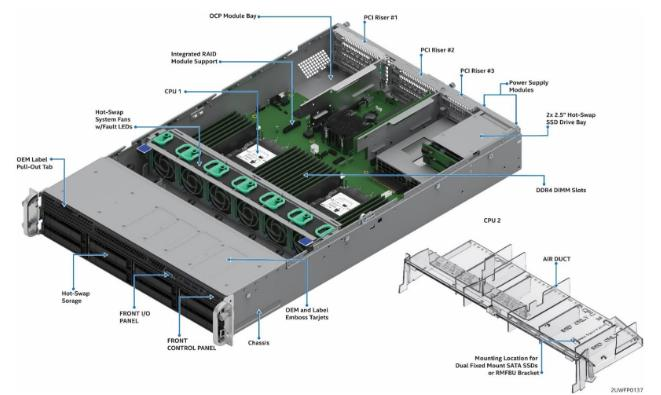
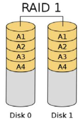
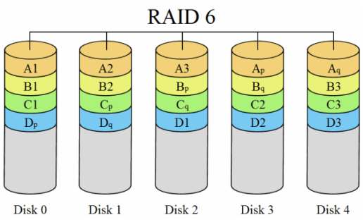
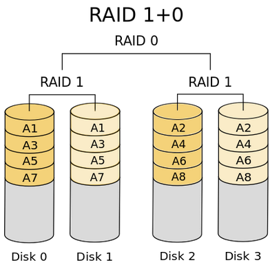
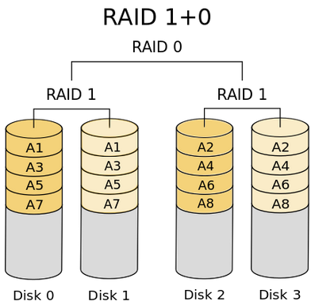

RAID#
La tecnología RAID (sigla que significa Redundant Array of Inexpensive Disks, conjunto redundante de discos de bajo costo, o en algunos casos Redundant Array of Independent Disks, conjunto redundante de discos independientes) permite al usuario formar una unidad de almacenamiento a partir de varios discos rígidos Esta tecnología fue desarrollada en 1987 por tres investigadores (Patterson, Gibson y Katz) en la Universidad de California (Berkeley). Desde 1992, la junta consultiva para el uso de sistemas RAID (RAID Advisory Board) ha administrado estas especificaciones. Estas consisten en la formación de una unidad con gran capacidad (y por lo tanto costosa) a partir de unidades más pequeñas y económicas (es decir, unidades en las que el MTBF, Mean Time Between Failure [tiempo medio entre fallos], sea corto).
Con la tecnología RAID, los discos unidos pueden utilizarse de maneras diferentes, denominadas niveles RAID
{kind=link}
{kind=link}
{kind=link}
Nivel 0#
Denominado configuración en bandas (striping). Consiste en almacenar datos distribuyéndolos en todas las unidades. Es utilizado para fusionar todos los discos duros en un sólo disco para aumentar la capacidad de almacenamiento y el rendimiento. Disminuye la fiabilidad.

Por ejemplo, cuatro unidades de disco duro 120 GB en una matriz RAID 0 aparecerá como una sola unidad de disco duro 480 GB para el Sistema operativo.
Nivel 1#
Denominado réplica (mirroring), crea una copia exacta (o espejo) de un conjunto de datos en dos o más discos. Es utilizado para garantizar la integridad de los datos.
{kind=link}
Por ejemplo, dos unidades de disco duro 120 GB en una matriz RAID 1 aparecerá como una sola unidad de disco duro 120 GB para el Sistema operativo
Nivel 2#
(Obsoleto) Es como el RAID 0 pero hace Striping con bits y utiliza un código de corrección Hamming.
Nivel 3#
(Striping + paridad). Denominado conjunto de discos con datos entrelazados en bits. Divide los datos a nivel de bytes en lugar de a nivel de bloques . Los discos son sincronizados por la controladora para funcionar al unísono. Éste es el único nivel RAID original que actualmente no se usa. Permite tasas de transferencias extremadamente altas.

Nivel 4#
El RAID 4 es parecido al RAID 3 excepto porque divide a nivel de bloques en lugar de a nivel de bytes (bloques ~ 512 KB
Nivel 5#
(Strinping + Paridad distribuida) Denominado conjunto de discos con paridad distribuida de entrelazado de bloques. Es una división de datos a nivel de bloques distribuyendo la información de paridad entre todos los discos miembros del conjunto. El RAID 5 ha logrado popularidad gracias a su bajo coste de redundancia. Generalmente, el RAID 5 se implementa con soporte hardware para el cálculo de la paridad. RAID 5 necesitará un mínimo de 3 discos para ser implementado.

Por ejemplo, cuatro unidades de disco duro 120 GB en una matriz RAID 5 apariencia similar a una unidad de disco duro 360GB para el Sistema operativo.
Nivel 6#
Se trata de una evolución del Raid 5, donde se busca ampliar la tolerancia frente a fallos, este aumento de tolerancia se consigue usando una doble banda de paridad (que también se distribuye entre todos los discos) y aumentando a 4 el número mínimo de discos necesarios para un Raid.
{kind=link}
Como resultado de las modificaciones introducidas los Raid 6, toleran el fallo de dos discos (incluso durante la reconstrucción de uno de ellos), sin pérdida de datos.
Niveles RAID anidados#
 

{kind=link}


RAID 100#
{kind=link}
RAID 50#

Caso práctico: Crear un RAID 0#
Antes de crear la RAID 0 podemos ver en el fichero /proc/mdstat por si al algún otro raid:
cat /proc/mdstat
Proseguimos a la creación del md en el que crearemos la RAID. Para ello utilizaremos el comando mknod :
mknod /dev/md0 b 9 0
Si ya tuviéramos algún otro raid llamado md0, podemos crear un md diferente: md1, md2, … Procedemos ahora a crear finalmente la RAID 0.
mdadm --create /dev/md0 --level=raid0 --raid-devices=2 /dev/sda /dev/sdb
Para formatear la RAID utilizaremos el comando
mkfs.ext4 /dev/md0
Podemos montarla en /mnt
/mnt : mount /dev/md0 /mnt/
Si quisieramos montar la RAID de forma automática cuando se inicia el ordenador, podríamos añadir algo parecido a /dev/md0 /punto_de_montaje sistema_de_archivos defaults,user 0 en el fichero /etc/fstab
Para cambiar un disco duro defectuoso:
sudo mdadm --remove /dev/md0 /dev/sda1
En el caso de que ya no este conectado, desde drbl se vería en cat /proc/mdstat como removed
Para recuperar raid:
mdadm --stop /dev/mdX #paramos todos los raid
mdadm --assemble --scan
mdadm --add /dev/mdX /dev/sdY # añadimos el nuevo
watch cat /proc/mdstat # podemos ver como se recuperan
En el caso de que no funcione puedes probar a usar antes sfdisk para clonar el esquema de partición sfdisk -d /dev/sdc | sfdisk /dev/sda
Para borrar el raid
# desmontamos el raid
umount /dev/mdX
# lo paramos
mdadm --stop /dev/mdX
# detener el conjunto raid
mdadm --stop /dev/mdX
# finalmente borrarlo
mdadm --remove /dev/mdX
LVM#
LVM es una implementación de un administrador de volúmenes lógicos para sistemas GNU/Linux. Permite crear, redimensionar y administrar volúmenes lógicos de una manera más dinámica que las particiones tradicionales.
{kind=link}
PV (Phisical Volume): son los volúmenes físicos, es decir, discos duros o particiones de un equipo.
VG (Volume Group): grupo volumen, es el área donde se juntan los PVs y VLs.
LV (Logical Volume): volúmenes lógicos o dispositivos donde se pueden crear sistemas de ficheros o FS
VM ofrece ventajas como la capacidad de agregar espacio de disco adicional a un sistema sin necesidad de apagarlo, mover datos en caliente entre discos, y crear instantáneas de volúmenes para respaldos.
Caso práctico: Crear LVM#
pvcreate /dev/sdb2 # Crear volumen físico
pvremove /dev/sdc1 # Borrado de volúmen físico
pvdisplay # Mostrar información
vgcreate DatosLVM /dev/sdb2 /dev/sda1 # Crear grupo de volúmenes
vgremove DatosLVM # Borrado de grupo de volúmenes
vgdisplay # Mostrar información
lvcreate --name ruta --size 500M DatosLVM # Crear volumen lógico
lvremove /dev/DatosLVM/ruta # Borrado de grupo de volúmenes
lvdisplay # Mostrar información
NAS#
Un «NAS» (Network Attached Storage,es un dispositivo de almacenamiento conectado a una red que permite a varios usuarios acceder a los datos almacenados en él. Estos dispositivos suelen ser fáciles de configurar y administrar, y son ideales para su uso en pequeñas redes. El NAS se utiliza generalmente para compartir archivos, copias de seguridad, almacenamiento multimedia y otros datos.

SAN#
Una red de área de almacenamiento, en inglés SAN (Storage Area Network), es una red de almacenamiento dedicada que conecta varios servidores y dispositivos de almacenamiento en una sola red. El SAN se utiliza principalmente para aplicaciones empresariales que requieren un alto rendimiento y una gran capacidad de almacenamiento. A diferencia de los NAS, los SAN suelen ser más complejos de configurar y administrar y están diseñados para satisfacer las necesidades de almacenamiento de grandes empresas.

Si los comparamos, un NAS es una solución de almacenamiento en red simple y económica, ideal para pequeñas y medianas empresas, mientras que un SAN es una solución de almacenamiento de alto rendimiento y escalable diseñada para satisfacer las necesidades de grandes empresas.
NAS: Utiliza protocolos de nivel de archivo como SMB/CIFS, NFS y FTP.
SAN: Utiliza protocolos de nivel de bloque como Fibre Channel (FC) y iSCSI.